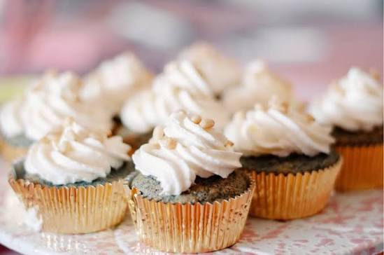

Welcome to Diné Blue Corn Bakery! This website celebrates the traditional flavor of blue corn by incorporating it into modern baked goods and desserts. From cupcakes and cakes to pancakes and other sweet treats, blue corn adds a unique flavor and connection to Navajo culture.
Explore our website to learn more about the inspiration behind the bakery and the different blue corn creations we offer.

Here is a great university to study at Utah State
© 2026 Diné Blue Corn Bakery